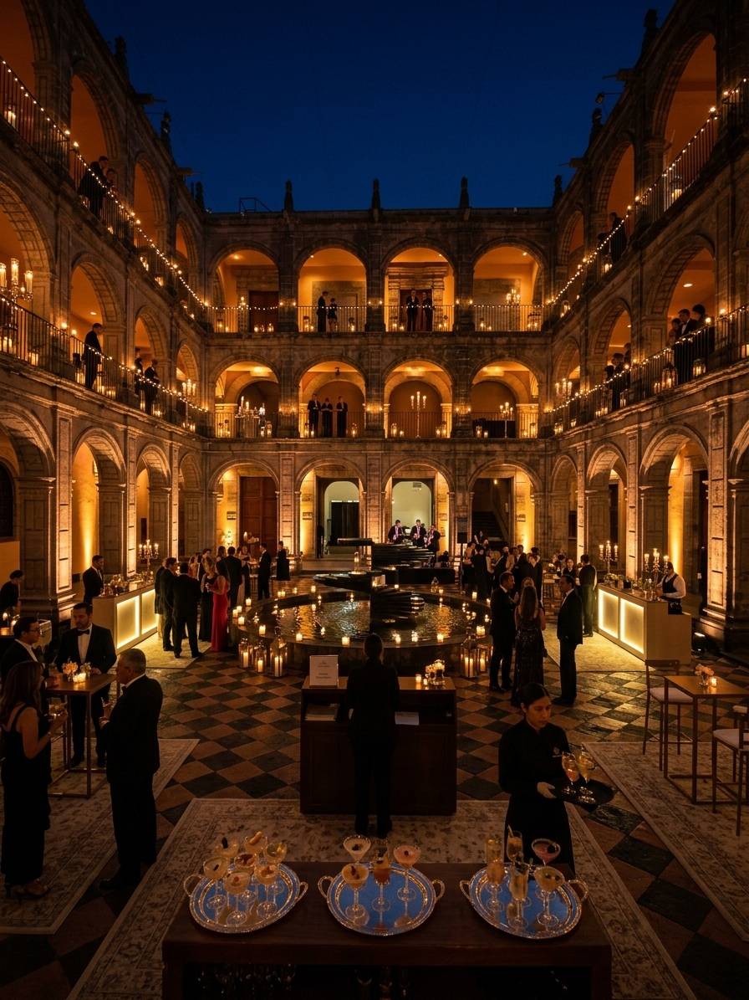
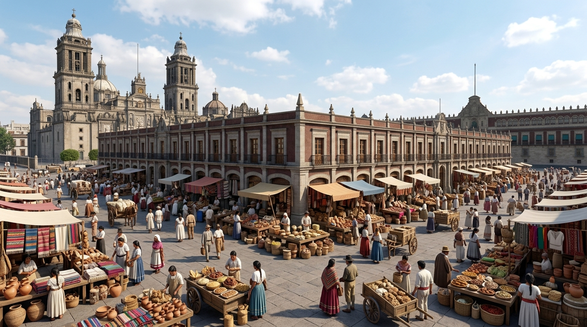
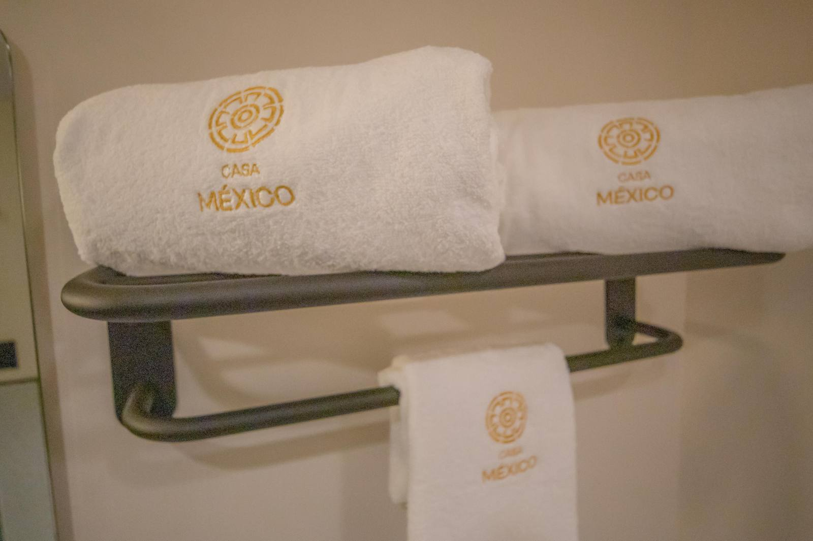

Vocero del Zócalo
Crónicas, guías y cultura del Centro Histórico — contadas desde Casa México, frente al Zócalo.

El Antiguo Colegio de San Ildefonso es la cuna del muralismo mexicano, a pocos pasos del Zócalo. Descubre qué murales ver y cómo organizar tu visita.
5 de octubre de 2026
Hace tres siglos, el Zócalo era el mercado más cosmopolita de la Nueva España. Descubre qué fue el Parián y cómo recorrer su huella a pie.
5 de octubre de 2026
Cómo llegar, qué zona conviene y por qué dormir a pasos del Zócalo cambia por completo la forma de conocer la ciudad.
30 de septiembre de 2026 GuíasUn recorrido a pie de dos horas entre catedrales, palacios y ruinas mexicas — todo a la distancia de una buena caminata desde el corazón de la ciudad.
10 de septiembre de 2026